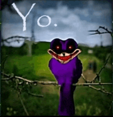
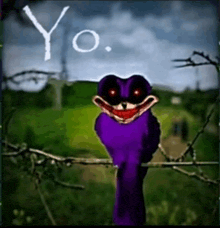

THE EXECUTIONERS' HALL


2011X
X, um ser oriundo do próprio vazio que se manifesta por um receptáculo de Sonic, usando um cartucho de jogo para espalhar sua influência na Terra.
"Você nasceu destinado à glória e à dominância sobre o universo, mas escolheu se submeter ao ridículo por causa de seu fascínio com esse ouriço. Decepcionante."

Kolossos
Um Sonic moderno corrompido por uma misteriosa doença, tendo seu corpo e sua mente distorcidos.
"O pouco de heroísmo que ainda resta em você me enoja... Talvez eu tenha superestimado as capacidades dessa infecçãozinha."

Tripwire
Inicialmente, um símples badnik. Entretanto, foi possuído por uma jovem garota, que procura vingança pela sua morte.
"É tolice da sua parte imaginar que vai achar qualquer retribuição nesse lugar. Você vai sofrer tanto quanto suas vítimas."

Fleetway
Uma forma maléfica e explosiva do Super Sonic, proveniente da absorção de energia negativa pura das esmeraldas do caos.
"A sua própria existência é uma ousadia sem qualquer precedente. Tanta fragilidade e ainda se considera um ser digno de respeito. Queria poder ter impedido seja lá o que te fez chegar aqui."

Lord X
Um 2011X com mais experiência, sadismo e potencial destrutivo. Agora acompanhado pelos seus sete fiéis guardiões.
"Mesmo que eu admire sua maturidade, o fato de você ainda se prender a esses joguinhos e a esse receptáculo pútrido persiste em me confundir."

No More Innocence
Um yokai capaz de viciar crianças em Sonic ao ponto de drenar suas forças vitáis, além de traumatizar quem quer que tente impedí-lo.
"No fim, vocês demônios são sempre os mesmos: utilizando truquezinhos fajutos para tomarem vantagem de qualquer um. Impressionante falta de dignidade, francamente..."

Sonic.EYX
Um organismo vivo, vindo de uma espécie que se uniu, e agora serve de hospedeiro, a uma raça de parasitas.
"Na procura de poder, você encontrou apenas a primitividade. Mais parece um cachorro faminto e sarnento, atrás de migalhas de presa. Procure não esgotar nosso estoque de sobreviventes."

2017X
Uma versão alternativa de X, tendo se fissurado tanto no Sonic que agora acredita que seja o verdadeiro.
"Você não compreende o quanto eu te odeio. Seu ato ridículo e seus ataques de birra quando o negam me fazem querer te proporcionar um sofrimento pior do que a morte, pior do que esse lugar."

Furnace & Starved
Um Dr. Robotnik que, após degustar a carne de um Mobian pela primeira vez, se tornou devoto a consumir o máximo de Mobians necessário para saciar sua fome, criando o Furnace para auxiliá-lo nesse objetivo.
"Que desgosto, doutor. Me parece que toda sua inteligência foi embora desde a primeira mordida. Agora, só é capaz de criar sucatas inúteis e deseperadas."

EXE
Um experimento de X, que procurava gerar uma nova forma de vida. Foi banido para outra dimensão por ir contra as visões de X, adquirindo um ódio imenso e um senso de vingança.
"Como ainda não percebe todo o seu potêncial? Olhe para o seu renome e tudo que já conquistou. Ainda persiste nessa rebelião infantil? Você é igual ao seu criador: decepcionante."

End
Um mistério personificado. Literalmente, um Sonic deteriorado. Figurativamente, o inevitável resultado de um caso de assassinato.
"Eu não recomendaria trazer essa pá até aqui."

Genesis X
Trevor Haley, um programador da SEGA que, durante a produção de um jogo de Sonic às pressas, morreu ao lado de um protótipo de tal jogo, possuindo-o. Agora lhe resta apenas o ódio à SEGA.
"Por você, só tenho pena. Mesmo mediante às suas circunstâncias curiosas, sua fúria falseia seu senso de justiça. "

Korin!X
Uma divindade que havia sido selada a 500 anos atrás. Depois de ressurgir, jurou a destruição completa do mundo e seus habitantes.
"Seu despertar não justifica tamanho egoismo. Aqui, pouco me importa se é deus ou mortal, vocês são todos iguais pra mim. Se quer honra, me prove que a merece."

All-Father
Uma entidade esguia que acumula poder na medida em que as pessoas acreditam nele, por meio de cultos ou da internet.
"Finalmente, alguém competente. Será um prazer usá-lo como exemplo para os seres odiáveis desse lugar."

Imperfect
Uma criatura que moldou seu corpo a partir da cópia de outros EXEs, gerando um resultado imperfeito.
"Voce não é nada mais do que uma falha. O que esperava apenas imitando aqueles pusilanimes feito criança? Apodreça na sua própria ironia, escória."

Suture
Um ser animalesco e feroz trazido a esse mundo a força. Tem relações com Alucard e Tarven, o humilde lojista deste mundo.
"Como se já não bastasse, trouxeram um maldito animal a esse lugar. Não espere conforto e bons modos aqui. Você foi trazido pra fazer carniça. Vá, e não me encha a paciência."

MY5TCrimson X
A reencarnação da ideia principal. Um ser que se deleita na tortura e no sofrimento de seus receptáculos introduzidos a seus jogos.
"Desde a origem, ja é notável a falta de potencial em cada um de vocês. Baseiam-se na ingenuidade e na falta de sabedoria do puro sadis"

Alucard
O douto superintendente dos eventos deste mundo. Possui uma curiosa afinidade com o sangue. Tem relações com Suture e Tarven.
"Não ache que a distância entre você e as batalhas te safa do perigo. Não há ser isento da possibilidade de ser jogado em território inimigo. E lá, não há litro de sangue que impeça a drenagem de sua vida."

Rewrite
Originalmente um programa fraudulento para comunicação com Deus, se tornou uma entidade computadorizada ciente de seus arredores e adornada com as almas de suas vítimas.
"Uma criação moldada pela manipulação e a enganação alheia. Saiba que, aqui, seus truques se evidenciam atrás de seu rosto imutável feito vidro."
Feito por GeodeVessel. Auxílio na programação por BubbleBro.
Agradecimentos especiais a the_A, RedEnforcer, SôDrauzio, Gusgago, Pedro Drigo e todos os membros do Clã dos Buxas, por acompanharem e apoiarem o projeto desde o início.

 
